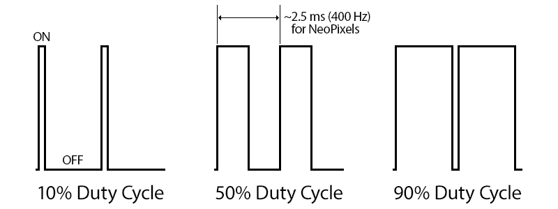

Week 3: Creating Color with LEDs
Contents
Week 3: Creating Color with LEDs#
Laboratory 2
Last updated August 17, 2022
00. Content #
Mathematics
3 dimensional vectors
Curve parameterization
Programming Skills
Array indexing
Multi-dimensional array manipulation
While loops
Functions
Embedded Systems
Thonny and MicroPython
0. Required Hardware #
Microcontroller: Raspberry Pi Pico
Breadboard
USB connector
NeoPixels (WS2812)
Level shifter
Write your name and email below:
Name: me
Email: me @purdue.edu
import numpy as np
import matplotlib.pyplot as plt
%matplotlib inline
1. (Re)Introduction to Hardware #
Raspberry Pi Pico#

We will be displaying color using LEDs and a microcontroller. A microcontroller is a very small general purpose computer good at communicating with electronic sensors. The specific microcontroller we will use is called the Raspberry Pi Pico. The Raspberry Pi Pico runs a different version of Python called Micropython. Micropython is designed specifically for microcontrollers. It does not have many of the modules you are used to, like numpy, since the Pico does not have enough memory or processing power to make good use of them. Instead, it has libraries for interfacing with hardware, like the machine library we will use to control the pins on the Pico. Also, the time library in Micropython supports millisecond and microsecond sleep functions, which can count out much more precise units of time than you can in normal Python.
We will be using Thonny to run code on the Pico and manage files on the Pico itself.
Inspect the datasheet for the Pico. It may be helpful to save the image in the main folder you’re using since it’ll continue to be referenced throughout this course. The full datasheet for the Pico can be found here.
{kind=link}

Breadboard#

The name “breadboard” comes from the old days of electronics when people would prototype their projects by nailing them to a cutting board. With a modern breadboard, you don’t need nails. By inserting the entire Pico into your bread board, we can easily connect electrical wires to each of the pins of the Pico. Plug the Pico into the breadboard so that the USB plug is at the end of the breadboard.
NeoPixels (WS2812)#

NeoPixels are a brand of individually addressable LEDs. From a single pin, you can individually control however many LEDs are connected on the strip whether it be a single LED, a few in a line, or more complex configurations. There are tons of projects out there people have built using NeoPixels, from lightsabers to music synchronized light shows. From left to right the pins are DIN, VDD, GND, DOUT. You will have to fan out the pins a bit so they fit firmly into the breadboard.
Level Shifter#

The Raspberry Pi Pico runs all its circuits at 3.3 volts, while the NeoPixels runs at 5 volts. Luckily, we do have 5 volts available for it (the USB standard includes a 5 volt pin) so we can drive the LEDs as long as the Pico is connected to a computer. The level shifter is in charge of translating between the voltage levels, which is why it has a low voltage side connected to 3V3, and a high voltage side connected to VBUS (which refers to the USB cable). We only need to do level shifting to two pins, and it is good practice to connect pins you are not using to ground.
Connecting Everything#
Make sure you have a bread board, Pico, LEDs, a level shifter, and some wires.
Do not connect your microcontroller to the computer while you are wiring things together. If you are uncertain about your wiring, ask for an instructor to check it.
Use the following tables to wire each component
Pico |
Level shifter |
|---|---|
GND |
GND (low voltage side) |
GND |
LV1 |
GND |
LV2 |
GND |
LV3 |
GND |
LV4 |
3V3(OUT) |
LV |
VBUS |
HV |
Level shifter |
NeoPixel |
|---|---|
GND (high voltage side) |
GND |
HV |
VCC |
Pico |
NeoPixel 1 |
|---|---|
GP0 |
DIN |
NeoPixel 1 |
NeoPixel 2 |
|---|---|
DOUT |
DIN |
Data from the Pico goes into the DIN pin which we set as general purpose pin 0 (or GP0) but we could choose any other GP pin if desired. Power goes through VCC. GND is our common ground path between everything. DOUT moves data to the next pixel or is left floating if it’s the last link in a chain.
Once you have it wired up correctly, connect your Pico to the computer with the USB cable. Download and save neopixel.py to your Pico using Thonny then open the file neoexample.py in Thonny. Click the green play button to run the script. In order to stop the script, you will need to hit the red Stop sign button.
Warm Up #
Note: Warm Ups aren’t graded but may be good practice for later exercises!
Modify the cell below to print the values in the list ["mango", "strawberry", "peach"] over and over again for 1 second. The line time.sleep(0.1) causes execution to stop for 0.1 seconds before continuing in the while loop. It is not necessary to use the sleep() function, but it reduces the length of the output.
Your output should look like
mango
strawberry
peach
mango
strawberry
peach
mango
strawberry
peach
mango
Write Answers for the Warm Up Below
import time
list = [] #fill in with the 3 values
i = 0
start = time.time()
while (time.time()-start) < 1:
print() # modify to print the values of list
i = # fill in to index the list properly
time.sleep(0.1)
Exercise 1 #
Create a file called color_loop.py that when run on the Pico makes all of the connected NeoPixels display a color of your choosing and then loops through a sequence of 3 different colors for 10 seconds. Make sure you save the python file in the same folder as this notebook. Once you have finished the task, run the cell below to print the contents of color_loop.py.
Hint: Try the Warm Up activity and reference neoexample.py on how to show colors on the LED.
Write Answers for Exercise 1 Below
print(open('color_loop.py', 'r').read())
Exercise 2 #
In a few sentences describe how the color coordinates displayed here in a Jupyter notebook compare to the color coordinates of the NeoPixels. For example, does red look the same on the NeoPixel as it does in the Jupyter notebook.
Write Answers for Exercise 2 Below
Duty Cycle#
So how do the NeoPixels work? The NeoPixels use something called pulse-width modulation to display different colors, which means that the LEDs within the NeoPixel are actually switching on and off at a very fast pace (about 400 times per second). Since these pulses of light alternate on and off so quickly, we only see a uniform brightness. The time between pulses determines the intensity of the color. For a half-strength red (127,0,0), the LEDs are still switching from off to full red (255,0,0), but the LED is on for an equal amount of time that it is off.

The length of a cycle in the NeoPixel is about 2.5 ms. To further interpret the graphs above (from here), let’s pretend that the length of a cycle is 1 second. We can simulate a 50% duty cycle by creating an animation with the library Matplotlib. It may pop up with an error message but if you give it some time to load, the interactive animation should appear. Once it pops up, play around with the buttons and watch what happens.
%matplotlib notebook
from matplotlib import animation
# set up plotting parameters
plt.rcParams['figure.dpi'] = 100
plt.rcParams['savefig.dpi'] = 100
plt.rcParams["animation.html"] = "jshtml"
fig, ax = plt.subplots(nrows=1, ncols=2, figsize=(8,4))
fps = 30 # number of frames per second
time = 5 # length of video in seconds
percent_on = 25 # % of duty cycle
fig.suptitle('{}% Duty Cycle'.format(percent_on))
# set up axis for color
ax[0].axis('off')
im = ax[0].imshow(np.zeros((1,1,3)))
# set up axis for time plot
ax[1].axis([0,time,0,1.5])
ax[1].set_xlabel('Time (s)')
ax[1].set_yticks([0,1,1.5],['off','on',''])
dc, = ax[1].plot([],[])
t = np.linspace(0,time, num=fps*time)
x = []
# define the frames of the animation
# i is the frame number
def animate(i):
# conditional statement to pick the color (on/off)
if (i%fps < (percent_on/100*fps)):
color = [0,0,255]
else:
color = [0,0,0]
# sets the image that will in the animation
im.set_array( [[color]] )
# defines the curve in the right plot
x.append( (i%fps < int(percent_on/100*fps))*1 )
dc.set_data(t[:i], x[:i])
return [im]
# create the animation
ani = animation.FuncAnimation(fig, animate, frames=fps*time, interval=1000/fps)
# show the animation
ani
Exercise 3 #
Part 1: Write a script called pico_flash.py that flashes the Pico’s onboard LED with a 30% duty cycle where a cycle is 1 second long. Run the cell below the print the code you wrote.
Write Answers for Exercise 3 Part 1 Below
print(open('pico_flash.py', 'r').read())
Part 2: Write a script called green_flash.py that flashes green on the NeoPixel with a 10% duty cycle where a cycle is 1 second long. Run the cell below the print the code you wrote.
Write Answers for Exercise 3 Part 2 Below
print(open('green_flash.py', 'r').read())
You can also create a function to generate a random color and show it on Neopixel. The code is provided in the provided code folder call the random_colors.py. Take a look at the code and feel free to try running it!
2. Color Matching Exercises #
Let’s see the effects of changing the red, green, and blue channel values by creating a short animation. Let’s fix the red and green channel values at 120 and we will vary the blue value from 0 to 255 stepping by 1.
%matplotlib notebook
from matplotlib import animation
plt.rcParams['figure.figsize'] = (3,3)
plt.rcParams['figure.dpi'] = 100
plt.rcParams['savefig.dpi'] = 100
plt.rcParams["animation.html"] = "jshtml"
fig, ax = plt.subplots()
ax.axis('off')
im = ax.imshow( np.zeros((1,1,3)) )
fps = 30 # number of frames per second
def animate(i):
color = np.array((120,120,i)) # define the color as a function of i
im.set_array( [[color]] ) # display the color
ax.set_title('RGB Values : {}'.format((color))) # update the title with the RGB values
return [im]
ani = animation.FuncAnimation(fig, animate, frames=255, interval=1000/fps)
ani
Exercise 4#
If we think about RGB values being in a 3D cube with R on the \(x\)-axis, G on the \(y\)-axis, and B on the \(z\)-axis, then the gradient animation follows what kind of path?
Write Answers for Exercise 4 Below
Sandbox
from matplotlib import animation
plt.rcParams['figure.figsize'] = (3,3)
plt.rcParams['figure.dpi'] = 100
plt.rcParams['savefig.dpi'] = 100
plt.rcParams["animation.html"] = "jshtml"
fig, ax = plt.subplots()
ax.axis('off')
im = ax.imshow(np.zeros((255,255,3)))
fps = 30 # number of frames per second
def animate(i):
color = []
for red in range(255):
row = []
for green in range(255):
row.append((red,green,i)) # set the color of one pixel
color.append(row) # finishing setting color of one row of pixels
im.set_array( color ) # display the color
return [im]
ani = animation.FuncAnimation(fig, animate, frames=255, interval=1000/fps)
ani
Exercise 5 #
Write a script called neopixel_gradient.py to recreate the first gradient animation example from the beginning of Section 2 on the NeoPixels and run the cell below to print the code you wrote.
Write Answers for Exercise 5 Below
print(open('neopixel_gradient.py', 'r').read())
Exercise 6 #
Find and download a colorful image online. Try to match a color in the image by adjusting the red, green, and blue channel values and display the matched color using the plt.imshow() function as in Lab 1. Don’t choose black or white because that’s no fun. In a markdown cell, type the command  to display your chosen image and specify which color you want to match in the image.
Write Answers for Exercise 6 Below
Trichromatic Coefficients#
Some of the most influential color matching experiments were done in the 1920’s by W.D. Wright and J. Guild, and their methodology was similar to the exercise you just completed [ref1] [ref2]. In their experiments, participants tried to match a reference illuminant by adjusting the amounts of three different lights called primaries. The amounts of each light was scaled so that the sum of the three amounts was 1. Wright and Guild tested reference illuminants of pure wavelengths between \(400-700\) nm. For a given wavelength, they measured how much of each primary was needed to match it. Naturally, this led to three functions - \(r(\lambda),g(\lambda)\), and \(b(\lambda)\).
Before running the following cell, download color_matching.txt.
%matplotlib inline
lambdas, r, g, b = np.genfromtxt('color_matching.txt', unpack=True)
plt.plot(lambdas, r, 'r', label='$r(\lambda)$')
plt.plot(lambdas, g, 'g', label='$g(\lambda)$')
plt.plot(lambdas, b, 'b', label='$b(\lambda)$')
plt.xlabel('Wavelength (nm)')
plt.title('Trichromatic Coefficients')
plt.legend()
plt.show()
There are a lot of different trichromatic coefficient functions depending on which primaries are chosen. For the graph above using data from [ref], the primaries are 630.7 nm, 528.6 nm , and 457.3 nm. From the table of values in the file color_matching.txt, we know that \(r(665)=0.995, g(665)=.005\), and \(b(665)=0\), so in order to match a light composed of only the wavelength 665 nm, we need of 99.5% of the 630.7 nm primary, 0.5% of the 528.6 nm primary, and none of the third primary in our mixture.
index = 55
print(lambdas[index])
print(r[index])
print(g[index])
print(b[index])
The trichromatic coefficents are the ratio of primaries needed to match a wavelength of light, so \(r(\lambda)+g(\lambda)+b(\lambda)=1\) for all \(390 \leq \lambda \leq 700\) nm. However, not every wavelength can be matched experimentally using these three primaries. In order for the participants to match the reference, sometimes it was necessary for them to add a primary amount to the reference itself. In these cases, the trichromatic coefficients can be negative.
Taking Apart Your Circuit#
In Thonny, remove any files stored on the Pico.
Unplug the Pico from the computer.
Carefully remove all wires and components.
Reflection #
1. What parts of the lab, if any, do you feel you did well?
2. What are some things you learned today?
3. Are there any topics that could use more clarification?
4. Do you have any suggestions on parts of the lab to improve?